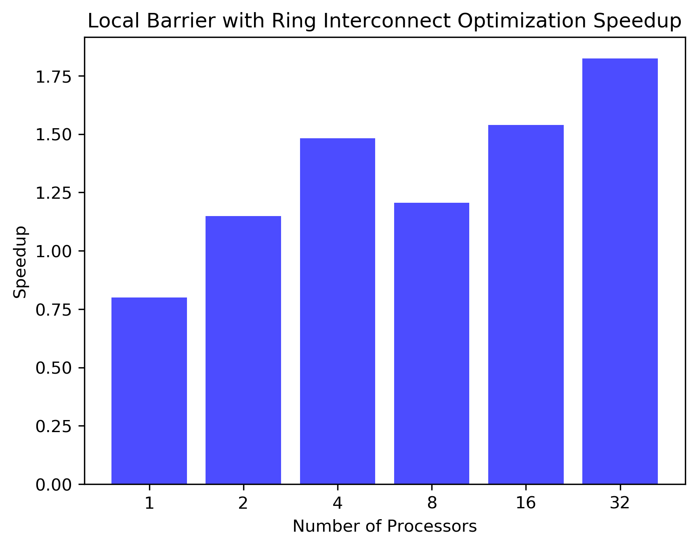
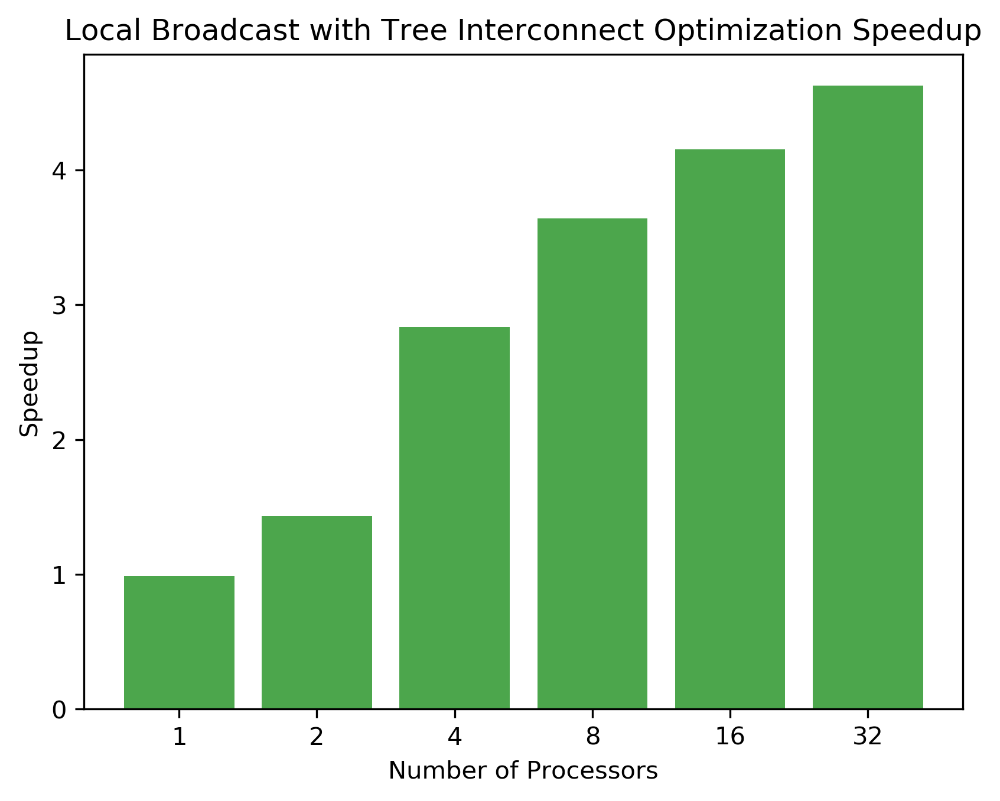

Final Report
PROJECT: MPI.JS
MPI, now on the web.
URL
https://the-parallel-gods.github.io/mpi.js/home/
THE VISION
Our mission is to revolutionize impractical distributed computing by providing a browser-based MPI implementation that empowers researchers and developers to seamlessly explore parallel programming concepts and deploy distributed applications across diverse platforms.
SUMMARY
We want to create an MPI library in the browser using JavaScript, implement some of the APIs (bcast, barrier, all_reduce, ...), use them to run MPI programs, and optimize the MPI collective APIs given the browser environment.
We have created a 40-page long documentation website for MPI developers here:
https://the-parallel-gods.github.io/mpi.js/docs/

Table of Contents
- PROJECT: MPI.JS
- URL
- THE VISION
- SUMMARY
- Table of Contents
- BACKGROUND
- Processes inside a browser are very isolated
- JavaScript is event-driven single-threaded language
- The browser cannot create a WebSocket server
- Browser comes with a UI
- SYSTEM ARCHITECTURE
- Address naming
- WebSocket Server
- Static File Server
- Global Router
- Node Router
- Doubly Indexed Database
- Real-time Dashboard
- OPTIMIZATION
- Single Source Multiple Receive (SSMR)
- Local Allreduce Optimization
- Global Optimization
- Latency Hiding
- RESULTS
- Local Tests
- Global Tests
- Global Barrier
- Conclusion
- Contribution
- Sean (haoxians) - 50%
- David (drudo) - 50%
BACKGROUND
MPI has never been implemented in JavaScript in the browser before, so we are bound to run into many new interesting problems specific to the runtime environment. In this section, we provide some background information on how JavaScript works and describe the challenges it poses. In the next section, we will describe our approach to solving these challenges.
Processes inside a browser are very isolated
For good security reasons, each process in the browser is very isolated from the others. This means that there is no shared memory between processes, and communication between processes is limited. The only types of communication that are allowed are point-to-point MessageChannels and BroadcastChannels. To make things worse, BroadcastChannels are rate-limited one message per 100ms, which is too slow. Effectively, we are forced to use MessageChannels for our communication inside a browser.
JavaScript is event-driven single-threaded language
Normally, JavaScript is designed for UI. What event-driven means in that context is every flow of control is initiated by an event, like a button press. Moreover, since it is single-threaded, no other code gets a chance to run until the function for that event finishes. This is a problem for parallel programming, because we can't just spawn a new thread to do some work in the background. This is a huge limitation when it comes to supporting non-blocking MPI operations.
The browser cannot create a WebSocket server
In this project, we want to support MPI programs that run across multiple computers over the Internet. Since the browser cannot create raw TCP or UDP sockets, the best option is to use WebSockets, which is a higher-level protocol built on top of TCP. However, since the browser does not have the permission to create servers, we need to have a centralized WebSocket server that all the browsers connect to. This server will be responsible for routing messages between the browsers.
Browser comes with a UI
Since the browser already provides an HTML UI, we can use it to show the status of the MPI program. In this project, we will take advantage of this by creating a live dashboard that shows the diagnostic information of the MPI program in real-time.
SYSTEM ARCHITECTURE
Our system architecture is inspired by network gateways at the global level and hardware architectures at the local level. We design our system to have a centralized WebSocket server that all the browsers connect to as well as a static file server. Inside each browser tab, the system creates many worker processes that run the user MPI code, which are all connected by hot-swappable interconnect architectures.
Address naming
Since this project involves significant routing work, here we formally clarify the address naming scheme we use.
- GR_ID: Global Router ID (unique identifier for each browser)
- NR_ID: Node Router ID (local unique identifier for each worker process, starts from 0 for each browser)
- PID: Universal Node Router ID (what user sees; global unique identifier for each worker process, continuous across browsers)
- NR_OFFSET: Node Router Offset (smallest PID in the local worker pool)
The system is designed this way so that the user can use an abstraction that gives the illusion of every worker process being in the same global network; however, the system under the hood is designed to be as optimized as possible.
Example system:
Browser: GR_ID=0
Worker: PID=0, NR_ID=0, NR_OFFSET=0
Worker: PID=1, NR_ID=1, NR_OFFSET=0
Worker: PID=2, NR_ID=2, NR_OFFSET=0
Browser: GR_ID=1
Worker: PID=3, NR_ID=0, NR_OFFSET=3
Worker: PID=4, NR_ID=1, NR_OFFSET=3
Worker: PID=5, NR_ID=2, NR_OFFSET=3
WebSocket Server
The WebSocket server is responsible for routing messages between the browser. It assigns each browser a unique GR_ID and keeps track of the global routing table. Since this central server is a point of contention, we designed it to be as lightweight as possible. We also designed our routing protocols to offload as much work as possible to the browser. Each request to the server is a simple JSON object that contains the message and the destination GR_ID. The websocket server uses the SSMR optimization (described later).
Static File Server
The static file server is responsible for serving the user's desired MPI code, the MPI.js library, and the UI files. It is a simple HTTP server that supports hot-loading the user's code into the browser.
Global Router
Sitting in the Browser's UI process, the Global Router is responsible for routing messages between browsers. Whenever a Node Router wants to send a message to another browser, it delegates the message to the Global Router. The Global Router then forwards the message to the destination browser's Global Router, which then forwards the message to the destination Node Router. When messages get to the Global Router level, the PID and the NR_IDs are abstracted away, and the system only deals with GR_IDs. This is done to make the system more scalable and to hide the complexity of the system at each layer. The Global Router uses SSMR optimization (described later), so if it needs to send the same message to multiple other Global Routers, it only needs to send one message to the WebSocket server.
Node Router
The Node Router is located in the worker process and is responsible for routing, queueing, and feeding messages to and from the user's MPI code. The Node Router is also handles routing messages between workers within the same browser. The Node Router achieves this with a custom routing table to determine the best route to send a message to another worker process. The Node Router uses SSMR optimization (described later) to reduce the number of messages sent.
In the best case, the interconnect that connects the Node Routers within the same browser is a crossbar, which allows any message to be sent to any other worker process within one hop. However, when more workers are needed, the number of connections grows quadratically, so we also support a ring and tree interconnect that balance the number of connections and hops.
When ring or tree interconnects are used, the Node Router also serves as a forwarder for messages that need to be sent to another worker. If a node isn't directly connected to the destination node, it will send it to someone closer to the destination, who will then forward it to the destination.
Doubly Indexed Database
Whenever a Node Router receives a message, it needs to feed that message to the user's MPI code. In our JavaScript MPI implementation, we skip the back and forth checking that actual MPI implementations do in order to improve performance. Instead, we directly deposit the message into a queue. Since the system is in a browser, where memory usage is already very high without MPI, we delegate the responsibility of not overflowing the queue to the MPI user. Since JavaScript is single-threaded and thread-safe, we can construct a very performant ProducerConsumer queue without locks.
The logic is as follows: when we receive a message with a tag and src_pid, we check the receiverDB if there is a user waiting for that message. If there is, we directly call the user's callback. If there isn't, we deposit the message into the messageDB. When the user calls a receive function, we check the messageDB for that message. If it is there, we directly call the user's callback. If it isn't, we deposit the user's callback into the receiverDB.
Our focus then shifts to making the queue as efficient as possible, since many messages can be waiting there. This would have been simple, if not for the tags and src_pids of the messages. MPI supports having users receive messages with only specific tags and from specific processes. If the number of messages in the queue is very high, the search through all of them to find the right message will be very slow. Our solution is to use a doubly indexed database. When a object is deposited into the queue, it is saved in memory, and we insert the object's tag and src_pid into two separate indices that point to the object. This way, no matter if the user requests according to tag or src_pid, all operations are O(1).
Real-time Dashboard
One of the key features of our system is the real-time dashboard. The dashboard shows the number of messages sent and received by each worker process, and the proportion of time spent on each MPI operation. The dashboard is updated in real-time, so the user can see how their MPI program is performing, and interpret the animations to debug or optimize their code.

OPTIMIZATION
Single Source Multiple Receive (SSMR)

One of the key optimizations we implemented was Single Source Multiple Receive. We observed that during a broadcast operation, the same message is sent to multiple workers. But since some messages are forwarded multiple times, the same message is sent multiple times. This is a waste of bandwidth.
Thus, we propose to change the destination field of the message to hold multiple destinations. This way, when a message is sent, it is sent to multiple destinations at once. Each forwarder along the way will first check if the message is meant for them, and if it is, they will first consume the message before forwarding it. Finally, the forwarding router will check if the message needs to be sent along multiple paths to reach all the intended destinations. If it does, it will group the recipients to achieve the minimum number of duplications as depicted above.
This optimization is implemented at both the local level between the Node Routers and the global level between the Global Routers. This optimization is particularly useful when the local interconnect is a ring or a tree. It is also effective at the global level where the resources are more scarce.
Local Allreduce Optimization
At the local level, we implemented an optimized allreduce operation using ring reduce. As described in lecture, the strategy uses significantly less bandwidth than the naive allreduce implementation. Particularly, when the interconnect is a ring, the allreduce operation fits perfectly into the ring structure.
For the tree interconnect, we implemented a optimized version as well. In this case, each layer of the tree reduces at the same time, and the root node broadcasts the result to all the other nodes. This is a significant improvement over the naive allreduce implementation, which would have to send the message to every other node.
Global Optimization
As described before, sending messages over the WebSocket server has high latency and low bandwidth. To reduce the number of messages sent, we implemented a divide-and-conquer strategy for MPI_Reduce and MPI_Barrier. For reduce, for example, first, each machine does its local fast reduce to produce a partial result. Then, the operation is raised to the global level, where each machine sends its partial result to perform a secondary reduce. This way, the number of messages sent over the WebSocket server is decreased significantly.
Latency Hiding

Finally, we implemented a latency hiding strategy for the bcast operation. We discovered that the WebSocket is many orders of magnitude slower than the local communication. Thus, we implemented a strategy where the local workers can keep working if permitted by correctness. This way, the latency of sending messages over the WebSocket server significantly overlaps. We found that the bandwidth isn't the primary bottleneck, so this strategy is particularly effective.
In this example, node 1 first sends a bcast to everyone, then node 2 sends a bcast to everyone. However, node 1's message reaches node 2 before node 1's bcast reaches everyone on the other machine. Instead of waiting for the message to propagate fully, node 2 can continue working and send its bcast without violating correctness. This way, the latency of the bcast operation is significantly reduced.
RESULTS
Local Tests
Due to limited space, we only show the speedup graphs here. For the full results, please see https://github.com/the-parallel-gods/mpi.js/tree/main/docs/images/benchmarks.
In the following tests, we run the MPI operations on a single browser with multiple workers. The speedup is calculated by comparing the time taken for the unoptimized version and the optimized version. The optimized version has the SSMR and the local allreduce optimization, while the unoptimized version does not.
Local Allreduce


When using the crossbar interconnect, communication is relatively fast. Because of this, naively sending the message to all other nodes is slightly faster than doing the ring reduce when the number of nodes is small. As a result, the extra overhead of calculating indices in ring reduce is actually 3x slower. However, as the number of nodes increases, the ring reduce becomes steadily faster than the naive reduce. The fastest speedup is 2x with 32 nodes.
When using the ring interconnect, the ring reduce is also slower than the naive reduce when the number of nodes is small. Again, this signifies the significant overhead of ring reduce. However, as the number of nodes increases, the ring reduce becomes significantly faster than the naive reduce. The fastest speedup recorded is 14x with 32 nodes. Note that the ring reduce has a higher speedup than the crossbar because when the interconnect gets more congested, the crossbar architecture is more efficient than the ring architecture. This is because the crossbar architecture does not involve any message forwarding.
When using the tree interconnect, the tree reduce is around the same speed as the naive reduce when the number of nodes is small. However, as the number of nodes increases, the tree reduce sees the largest speedup. The fastest speedup is 50x with 32 nodes. While the optimized version perfectly fits the tree architecture's structure, the naive version has to send the message to every other node. Because the tree has a root, a single point of contention, the unoptimized version doesn't know about this contention and results in extreme inefficiency. Due to this contention, the tree architecture is the slowest when using the naive reduce.
Local Barrier



In this test, we see that the optimized barrier operation is not significantly different in speed on the crossbar architecture. This is expected since the SSMR optimization doesn't apply if all messages are direct. In the ring and tree architectures, the optimized barrier operation is slightly faster because the "return echo" of the barrier operation can benefit from the SSMR optimization.
Local Bcast



When using the crossbar interconnect, the optimized version is ever so slightly slower than the non-optimized version, indicating that SSMR does also have overhead. However, when the number of nodes increases, the optimized version becomes faster, since they don't wait for the message to propagate fully. Instead, the node can choose to start the next operation early. The most that this strategy can save is the "return echo" of the bcast operation, which should save around 2x. This is exactly what we observe.
When using the ring or tree interconnects, the SSMR and the latency hiding strategy are particularly effective. The fastest speedup is 10x with 32 nodes for ring and 4.5x with 32 nodes for tree.
Global Tests
In the following tests, we run the MPI operations on a two browsers with evenly split number of workers. The two browsers are running on the same machine for this test. It demonstrates the same principles as using multiple machines, but with less noise. Running on multiple machines should expect much more slowdown due network latency.
The speedup is calculated by comparing the time taken for the unoptimized version and the optimized version. The optimized version has the SSMR and the global optimizations, while the unoptimized version does not. Note: the raw time between different operation are not comparable, since they are run for a different number of iterations.
Global Broadcast


The unoptimized global broadcast time is slightly surprising. When there's less than 4 nodes, the operation is very fast. However, as soon as it hits 8 nodes, the operation becomes very slow. The reason for this is because there is some sort of buffer in the low level WebSocket interface. We performed regular send and receive tests, and found that if first 2 back-to-back messages are sent immediately, but any subsequent messages are queued and sent in a group after around 50ms. We reason that this is a optimization that is made by the WebSocket, and it is out of our control. Because of this behavior, we observe the cliff in the graph.
The optimized global broadcast time is significantly faster than the unoptimized version. First, we avoid the cliff in the graph by condensing all the messages into one message. Second, it uses SSMR avoid the overhead of sending the same message multiple times. The optimized version time graph makes sense, since it only sends one message at a time. The time it takes gradually increases as the number of nodes increases, as expected. As a result, we get some speedup at lower processor counts, but the largest speedup is at higher processor counts. However, the speedup decreases at higher processor counts, since the unoptimized speed is largely constant. The fastest speedup is 100x with 64 nodes.
Global Barrier


Again, we observe the cliff in the unoptimized global barrier time at 8 nodes. This is likely due to the same reason as described above. The optimized global barrier avoids this cliff by first performing a barrier locally, then performing a secondary barrier globally. This way, the number of messages sent over the WebSocket server is reduced significantly. True, there are now two stages of barriers, but this is still faster since it reduces the bottleneck. The optimized version time graph makes sense, since it gradually increases as the number of nodes increases. As a result, we get some speedup at lower processor counts, but the largest speedup is at higher processor counts. However, the speedup decreases at higher processor counts, since the unoptimized speed is largely constant. The fastest speedup is 230x with 64 nodes.
Global Reduce


The unoptimized global reduce time is slow, with an upward trend as the number of nodes increases. This is because the operation is naive and sends more data as there are more nodes. Interestingly, the optimized version uses around the same time up till 16 nodes, then starts to significantly slow down. We suspect that this is because of the machine that we are using only having 20 cores. Thus, the OS is forced to context switch, and since reduce is a computation heavy operation (unlike barrier and bcast), this slows down the operation. As a result, the speedup is fastest when there are 16 nodes, at a little over 50x.
Conclusion
This project is much larger and more complex than we initially anticipated. We learned a lot not only about MPI, but also about the browser environment, identifying relevant bottlenecks, and optimizing for interconnects. In the end, this project has over 3000 lines of code, including the library and documentation. Although we could not implement the non-blocking APIs (due to the single-threaded nature of JS), we spent the time to optimize the collective APIs instead. We are proud of the results we achieved.
As planned in the proposal, we ran a MPI program on our system (the sqrt program provided in asst4), and found our system to only perform ~10x slower than the -O3 optimized C version. This is a significant achievement, considering the overhead of running a scripted language in the browser. We also compared using local channels and global WebSocket channels, and found that the global channels are significantly slower (and thus, we optimized accordingly).
This project is truly one-of-a-kind, there is really not much out there that does what it does. We hope our work not only served as a good learning experience for us, but also could be inspiring to others in the community.
Here's the documentation link again for this project:
https://the-parallel-gods.github.io/mpi.js/docs/
Contribution
Sean (haoxians) - 50%
- MPI front end
David (drudo) - 50%
- MPI backend end